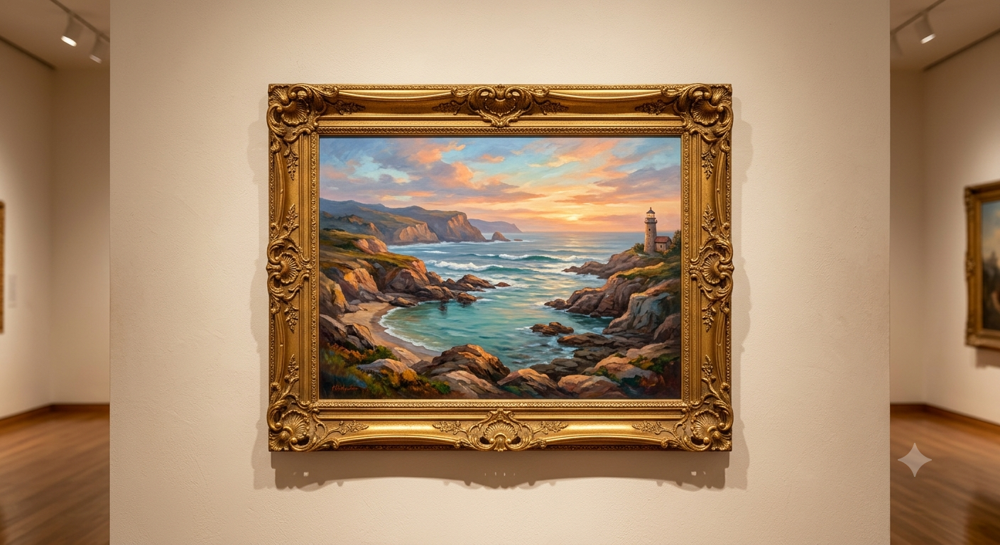

<!DOCTYPE html>
<html lang="pt-br">
<head>
    <meta charset="UTF-8">
    <meta name="viewport" content="width=device-width, initial-scale=1.0">
    <title>Blog Museu/title>
    <style>
header{ 
background-color: rgb(255, 197, 130);
color: white;
text-align: center;
max-width: 800px;
margin: 0 auto;
padding: 16px;
border: 5px solid rgb(255, 194, 101);

}
main{
    background-color: white;
    color: rgb(255, 215, 163);
max-width: 800px;
margin: 0 auto;
padding: 16px;
} 
article{
    display: flex;
}
img{
    width:300px ;
    height: 300px;
    border-right: 25px;
}
.artigo-autor  {
    font-weight: bold;
}
article{
    padding-bottom: 50px;
}
    </style>
</head>
<body>
    <header>

        <h1>Blog museu 💞​</h1>
        <p>🇧🇷</p>
    </header>
        <main>
            
            <article> 

                
                <div>
                    
                    <h2>Meu primeiro post</h2>
                    <p class="artigo-autor">Por:Kassiane Nunes</p>
                    <p>Boas vindas ao Meu novo Blog! Aqui irei compartilhar um pouco sobre meu museu!</p>
                    <button> 👎<span>0</span></button>
                    <button> 🥰​ <span>0</span></button>
                    <button> ​💬​​ <span>0</span></button>
                </div>
            </article>
            <article>

                
                <div>
                    
                    <h2>Meu Segundo post</h2>
                    <p class="artigo-autor">Por:Kassiane Nunes</p>
                    <p>Um quadro bellíssimo 🩵 </p>
                    <button> 👎​<span>0</span></button>
                    <button> 🥰​ <span>0</span></button>
                    <button> ​💬​​ <span>0</span></button>
                </div>
            </article>
        </main>
</body>
<script>
    const botoes =document.querySelectorAll("button");

    botoes.forEach( function(botao){
        let curtiu = false;
        botao.addEventListener("click", botaoClicado);
        function botaoClicado(){
            console.log("fui clicado");
            let texto = botao.querySelector("span")
            if (curtiu === false){
                texto.textContent++;
curtiu = true;
            } else{
        texto.textContent--;
        curtiu = false;
            }
        }
    })

</script>
</html>